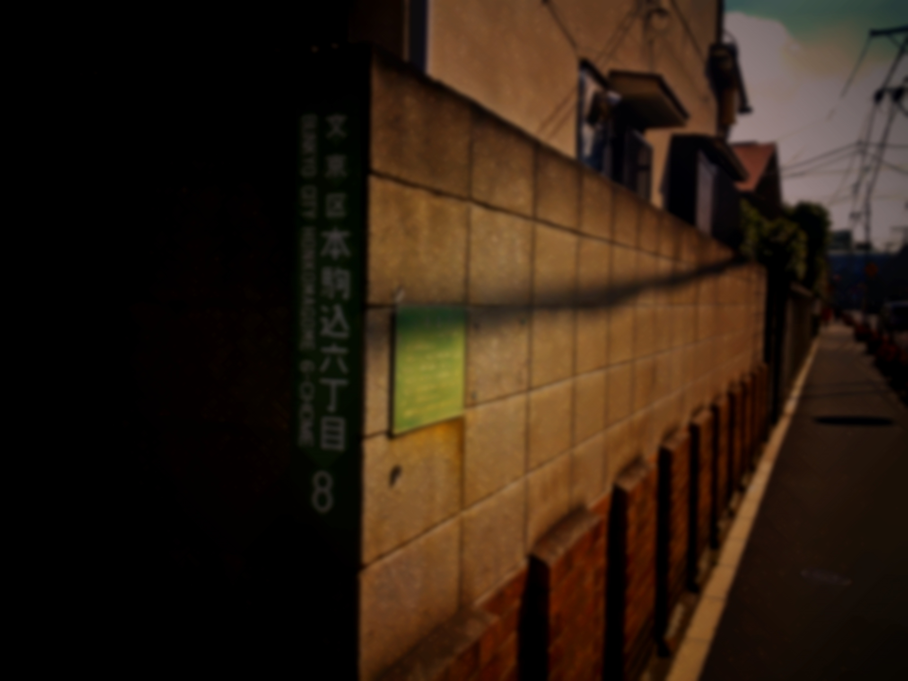

不想开学
发表于 28th Mar 2011
春假都待在老家，没能碰上几次面，
就快要开学了，对这样的我来说，
或许唯一值得期待的……只有「能见到她」这件事而已。
像去年那样的事情我已经受够了。
希望一切都能平安无事。
附上准备回程的照片

无题
发表于 8th Apr 2011
从开学到现在已经过了两天......。
或许不会再发生了？
已经没事了？
希望就这样平安无事的继续下去。
路上看到的猫咪

无题
发表于 16th Apr 2011
你也看得到嗎？

无力感
发表于 29th Apr 2011
果然又开始了，
为什么要这样？
比以前还过份，
救救我、到底该怎么办？
我不知道
发表于 3th May 2011
班上开始了匿名问卷调查，
除了我，还有多少人愿意说出来呢？
从什么时候开始变成这样的……。
对不起
发表于 5th May 2011
对不起对不起
对不起
对不起
对不起
对不起
对不起
对不起
对不起
对不起
对不起
对不起
对不起
对不起对不起对不起对不起对不起
无题
发表于 8th May 2011
不想让她担心，
不想回去
累了。
够了
发表于 26th May 2011
已经不行了
够了
不能就这样结束
发表于 29th May 2011
这不是真的吧…为什么现在才让我知道这些事？
谁可以帮帮我？
无题
发表于 10th Jun 2011
今天学校一团乱，
好像还上新闻了。
无题
发表于 16th Jun 2011
真的能相信她吗？

？？？
徒花
发表于 20th Jun 2011
对不起，
最后的最后才帮上妳的忙。